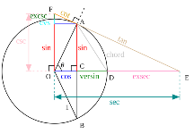

Trigonometry is a branch of mathematics that deals with the relationships between the angles and sides of triangles. Its origins can be traced back to ancient civilizations, where early astronomers and mathematicians developed methods to study the motion of celestial bodies and solve practical problems related to land surveying and construction.


The ancient Egyptians and Babylonians are known to have some knowledge of basic trigonometric concepts, although their understanding was more geometric in nature. They used simple ratios and measurements to calculate angles and distances. However, the development of trigonometry as a formal mathematical discipline is often attributed to the ancient Greeks.
The Greek mathematician Hipparchus, who lived in the 2nd century BCE, is considered one of the pioneers of trigonometry. He created a table of chords, which relates the lengths of chords in a circle to the corresponding angles. This table laid the foundation for the development of trigonometric functions.
Later, the Greek mathematician and astronomer Claudius Ptolemy further expanded on Hipparchus' work in his famous treatise called "The Almagest." Ptolemy introduced the concept of the trigonometric functions sine, cosine, and tangent, and developed tables of values for these functions. His work greatly influenced the development of trigonometry in the Islamic world and later in Europe.
During the Islamic Golden Age, which spanned from the 8th to the 14th centuries, Muslim mathematicians and scholars made significant contributions to trigonometry. They built upon the Greek works and developed new trigonometric techniques, such as the development of trigonometric identities and the use of sine and cosine in solving geometric problems.
One of the most notable Islamic mathematicians was Muhammad ibn Musa al-Khwarizmi, who lived in the 9th century. Al-Khwarizmi's work on trigonometry and algebra was later translated into Latin and had a profound influence on European mathematics.
Trigonometry reached Europe during the Renaissance, where it underwent further development and refinement. Mathematicians such as Regiomontanus, François Viète, and Johannes Kepler made important contributions to trigonometric theory and its applications in astronomy and navigation.
Over time, trigonometry has become an essential part of mathematics and has found numerous applications in various fields such as physics, engineering, architecture, and computer graphics. Its origins lie in the ancient civilizations, but its development and sophistication have continued throughout history, with contributions from different cultures and mathematicians.